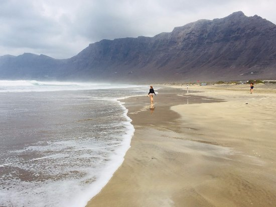

La playa de Famara es una playa muy conocida de Lanzarote. Está situada en la costa noroeste de la isla, cerca del pueblo de Caleta de Famara.
Es una playa extensa, con arena y vistas a los acantilados. Es un lugar ideal para pasear, disfrutar del paisaje y practicar deportes acuáticos.
Me gusta Famara porque es un lugar tranquilo para pasear y desconectar. También me gustan sus paisajes y las vistas al mar. Es un sitio al que iría para pasar una tarde con amigos o familia.

Puedes encontrar más información sobre este lugar en esta página sobre Caleta de Famara.